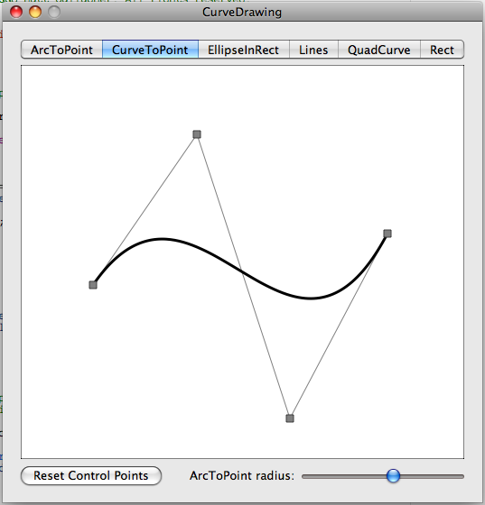

Please note: this article is part of the older "Objective-C era" on Cocoa with Love. I don't keep these articles up-to-date; please be wary of broken code or potentially out-of-date information. Read "A new era for Cocoa with Love" for more.
CoreGraphics curves and lines: a sample app
This is a small application which shows the basic CoreGraphics line drawing primitives. Includes mouse editable control points to manipulate the primitives graphically.
CurveDrawing
This post is a departure from my normal style. It's really just an example that you can play with to get a feel for how basic controls and drawing operate in a Cocoa application.
The project and code for this post can be downloaded here:
This project is XCode 3.0 Universal.
If you have an Intel Mac and haven't installed the PPC SDKs, you may get a "warning... missing required architecture PPC". Either disable the PPC build (Project->Project Settings->Build->Architecures) or choose "Debug" instead of "Release" from the "Active Build Configuration" to avoid.
The code for the application shows:
- NSView subclassing
- Using an NSSegmentedControl to switch between options
- Line and rectangle drawing using CoreGraphics C functions
- Getting the CGContextRef for the current NSGraphicsContext using
-[NSGraphicsContext graphicsPort] - Mouse tracking and dragging using
-[NSWindow nextEventMatchingMask:(NSLeftMouseDraggedMask | NSLeftMouseUpMask)] - Using an NSSlider an configuring it for continuous updates using
-[NSControl setContinuous:YES]
Once compiled, the result will look like this:
The program doesn't implement any kind of Model-View-Controller architecture (the "model" is really just 4 NSPoint values — too trivial for an abstracted layer). It also doesn't show all the CoreGraphics lines drawing primitives — I've left out a couple that can't easily be described with 4 control points.
Understanding the program
The program always shows exactly 4 control points as small gray squares in the window. Each of these can be clicked and dragged around with the mouse
The control points are used to draw the current primitive (selected in the segmented control at the top of the window).
"ArcToPoint" draws using the function CGContextAddArcToPoint. This primitive is typically used for drawing round rectangles, though it can also be used to draw curve segments between lines of any angle (chamfers and fillets). The radius of the curve is controlled by the slider at the bottom of the window.
"CurveToPoint" draws using the function CGContextAddCurveToPoint. It uses all four points to draw a cubic Bézier.
"EllipseInRect" draws using the function CGContextAddEllipseInRect. It draws an ellipse in the rectangle that encloses all four control points.
"Lines" draws using the function CGContextAddLineToPoint. It draws line segments through all the control points.
"QuadCurve" draws using the function CGContextAddQuadCurveToPoint. It uses the first three points to draw a quadratic Bézier.
"Rect" draws using the function CGContextAddRect. It draws a rectangle that encloses all four control points.
Understanding the code
The only code for the program is in the "CurveView.m" source file. It consists of the following methods:
- initWithFrame:
Invoked as the NIB is loaded. Initializes the array of points to their initial values. - awakeFromNib
Invoked by the NIB loader after the CurveView has been connected to the slider. Sets the slider to continuous (so that we receive updates while the slider is being adjusted) and sets the initial "radius" value to the midpoint of the slider. - drawRect:
An implementation of the default NSView drawing method. Invoked by Cocoa automatically when the view needs to be drawn in the window or when the view is deliberately updated. It draws:- background as a white square framed in black
- a line from point 0 to 1, 1 to 2 and 2 to 3
- the currently selected drawing primitive using the control points
- a square to represent each of the four control points
- mouseDown:
Determines if a click in the view occurred in one of the control point squares and drags the control point while the mouse remains down. - setRadius:
Invoked automatically by the binding set up in the NIB file between the slider and the "radius" value on the NSObjectController in the NIB. Since the "content" of the NSObjectController is set to the "CurveView", this has the effect of binding the slider to the CurveView's radius.
We implement this method (instead of letting the binding set the value directly) to trigger a view redraw after changing the "radius". - changeSegment:
Invoked as the target of the NSSegmentedControl's action when clicked. We change the selected index and redraw. - resetControlPoints:
Invoked from the "initWithFrame:" method and by the button in the window. Sets the points in the array to their default values. - controlPointRectForPoint:
Invoked from "drawRect:" and "mouseDown:". Returns the bounds of the control point rectangle corresponding to a point. - boundsOfAllControlPoints
Calculates and returns a rectangle enclosing all the control points.
Understanding the MainMenu.xib file
The XIB file is the new XML version of the NIB file. It is still compiled into a .nib file when the project is built.
Most of the objects in the application are created from the NIB file. These include:
- All menus in the menu bar and all their contents (these are the default Cocoa Application menus)
- The window and all its contents, including the CurveView (modelled as a Custom NSView in InterfaceBuilder)
- An NSObjectController which only exists to connect the NSSlider in the window to the "radius" value of the CurveView via bindings
Connections made between objects:
- "Reset Control Points" button has its action connected to the CurveView's resetControlPoints: method to allow the button to work.
- "ArcToPoint radius" slider has its value binding connected to the "radius" value of the "Object Controller" to announce changes to the slider.
- "Object Controller" NSObjectController has its "content" set to the CurveView to allow the controller to keep things (specifically the slider) in sync with CurveView values.
- The NSSegmentedControl has its action set to the CurveView's changeSegment: method.
- The CurveView has its "sliderControl" set to the "ArcToPoint radius" slider.
NSMapTable: more than an NSDictionary for weak pointers
Better integration for NSViewController and NSView